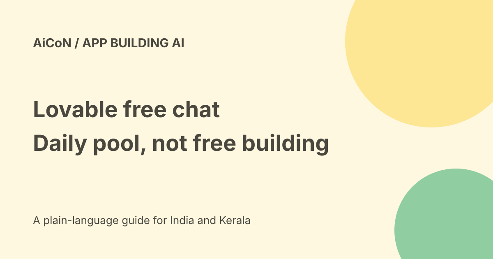

Lovable free chat: daily allowance, credits and expiry
Lovable's current chat offer covers a daily allowance on Free, Pro and Business workspaces through 31 October 2026. It is not unlimited free building. After the allowance runs out, chat uses daily build credits and then general credits. Enterprise workspaces do not receive this daily chat allowance.

Chats and Chat mode are different
Chats sits outside your projects and gives you a personal conversation with Lovable. Chat mode is inside a project and starts with that project's code, files and data.
The documentation says people with project access can see its Chat mode conversation. A personal chat and a shared project thread should not be treated as the same audience.
What can a conversation help with?
The official launch suggests comparing ideas, turning customer feedback into a plan or improving an existing app. Voice input is another way to ask.
In Chat mode, discussing a change does not itself edit code. Lovable can present a Start building card. Accepting that handoff changes the mode and can trigger paid-credit work.
The daily pool is shared
The current docs say the allowance belongs to the workspace. Everyone's chat messages draw from the same pool. It resets at 00:00 UTC, which is 05:30 IST, and unused allowance does not roll over.
Pro and Business have a larger allowance than Free. We did not verify a fixed numeric amount for every current plan or account. Check the Daily chat credits row in Plans and credit usage.
What happens when it runs out?
Chat messages are priced on the work needed to answer, usually a fraction of a credit. The allowance covers them first. After that, the same chat pricing draws from daily build credits and then general credits.
Enterprise does not include a daily chat allowance, so its chat starts using workspace credits with the first message. Do not tell an Enterprise team this offer gives it a free daily pool.
What is not part of the offer?
Build, Plan, image and video generation, Cloud and AI usage keep their standard pricing. A chat that creates or edits a project sends work into build usage.
Hosting, databases, deployed-app AI features and some connectors can have their own usage costs. Free discussion does not make a published app free to operate.
Expiry and price boundaries
The current documentation calls the chat pricing model temporary and subject to change, applying through 31 October 2026. Recheck after that date rather than assuming the offer continues.
No final subscription total, rupee credit price or tax invoice was established here. The guide explains the credit flow, not a complete Indian checkout quote.
Use the visible cost checks
Chat mode displays a Free badge while the allowance covers the message. The More options menu on a reply shows the message's credit use. Workspace usage details lets you review spending by category.
Before selecting Build or approving a project change, inspect the mode and available credits. A friendly chat answer is not evidence that the next action costs nothing.
A low-risk planning workflow
- Choose the intended workspace and project.
- Check whether you are in a private Chat or shared Chat mode.
- Review today's allowance and plan type.
- Ask a small planning question without secrets or customer records.
- Compare the answer with the actual app.
- Inspect the response's cost indicator.
- Decide separately whether to enter Plan or Build.
- Read the proposed change before approving it.
- Test the changed app and check usage afterwards.
Connected data and privacy
A connected tool or project database can contain information other people cannot see. Review service permissions and workspace policy before bringing it into a conversation.
The current changelog says Business and Enterprise workspace data is excluded from model training by default. Do not apply that sentence to every Free or Pro account; inspect the actual current data settings and terms for your plan.
India and practical limits
The offer is documented by Lovable, but no Indian workspace was activated, credits consumed or app built here. Malayalam voice input, account quota and connector behaviour were not tested.
For a Kerala student, the useful starting point is a small discussion within the visible allowance. It is not a promise of a free production app or unlimited daily design revisions.
What changed since the original post?
Two repeated posts become one guide. We add the shared-pool reset, Enterprise exclusion, post-allowance credit order, public-versus-private conversation distinction and the October expiry.
Frequently asked questions
Is Lovable chat unlimited?
No. The documented free allowance is daily and shared.
Does approving Start building remain free chat?
No. The resulting project work uses build credits.
Does unused allowance carry over?
No.
When should I recheck?
Before using it, and especially after 31 October 2026.
Sources: Official free-chat launch · Current Chat mode rules · Credit and usage categories · Current product changelog. Checked 7 October 2026.